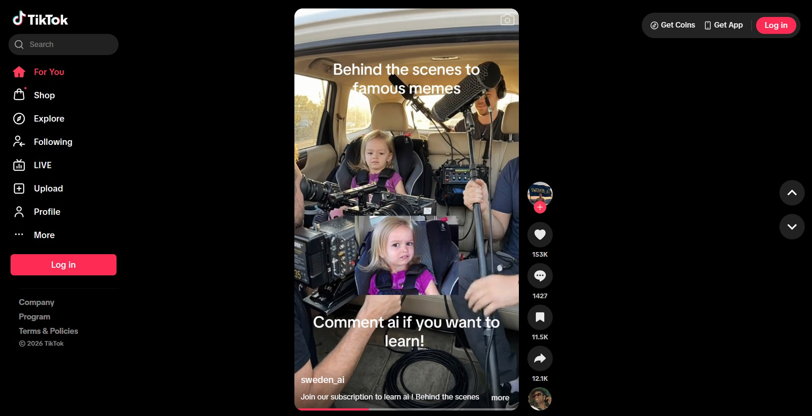
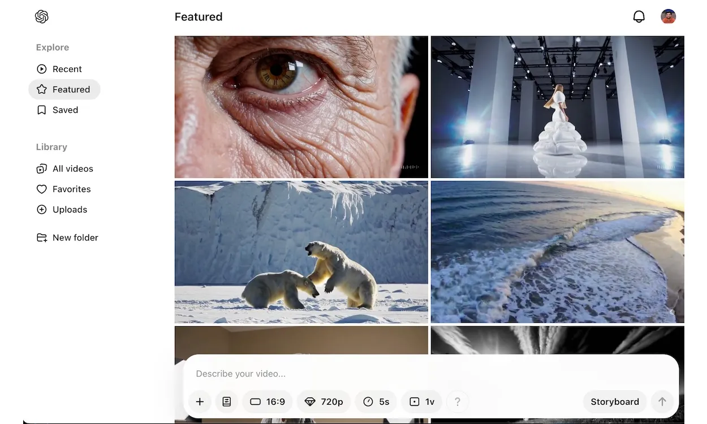

I have chosen TikTok because I believe this would be my primary inspiration for the project's website layout. As I'm refining my ideas down, I was also inspired by how TikTok is oversaturated with AI-generated content, so that connects with my interest in commentating on AI impacting the modern entertainment. Even in the desktop format, I am interested how the desktop TikTok interface works with the phone aspect ratio in order to display video and how to interact with the TikTok. I do think working with the interface here is straightforward and makes sense for the commentary I want to portray.

I have chosen Sora AI as an inspiration point as well, especially since I can draw similarities to its layout with short-form content apps like TikTok and Instagram. I think mirror the scrolling gallery form and prompt box are what caught my eye the most, since the design is minimal but effective. The topic of AI-generated content is also relevant with this choice, even if Sora is shut down. There are still AI models being trained and generating video, and one of those uses with these models is to generate entertainment.